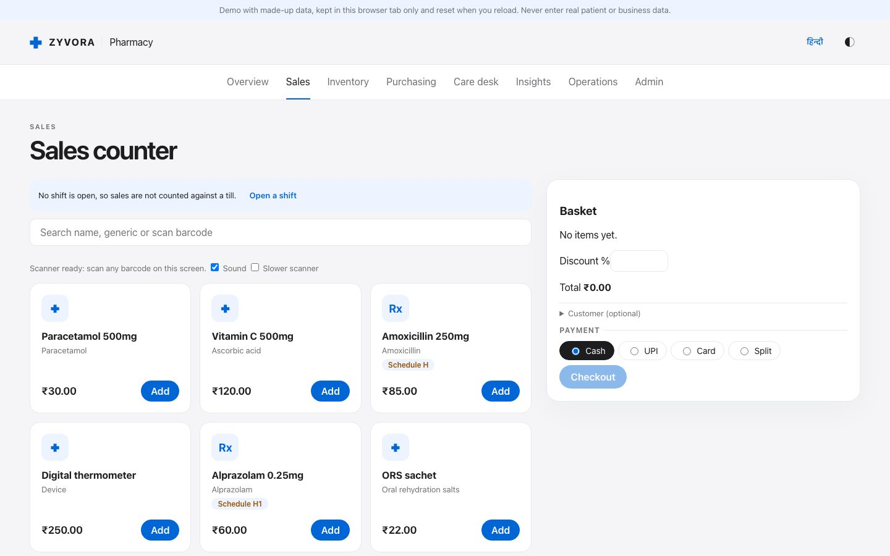
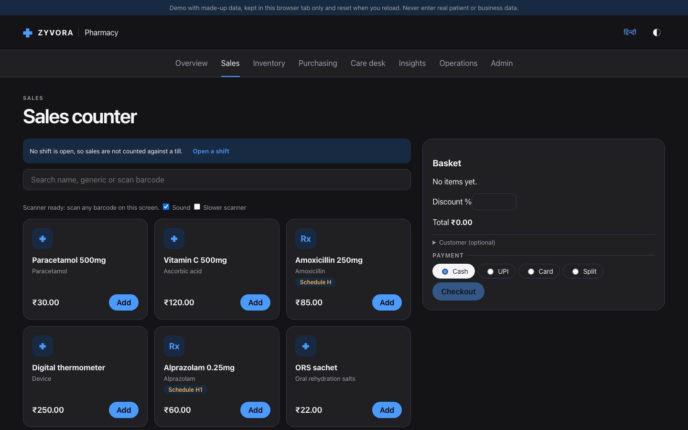
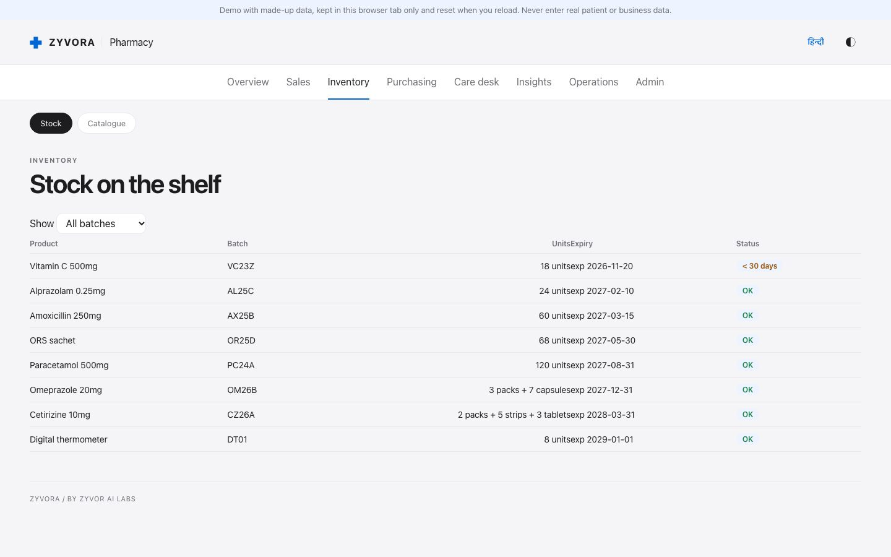
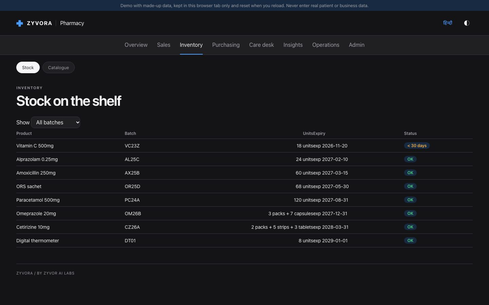
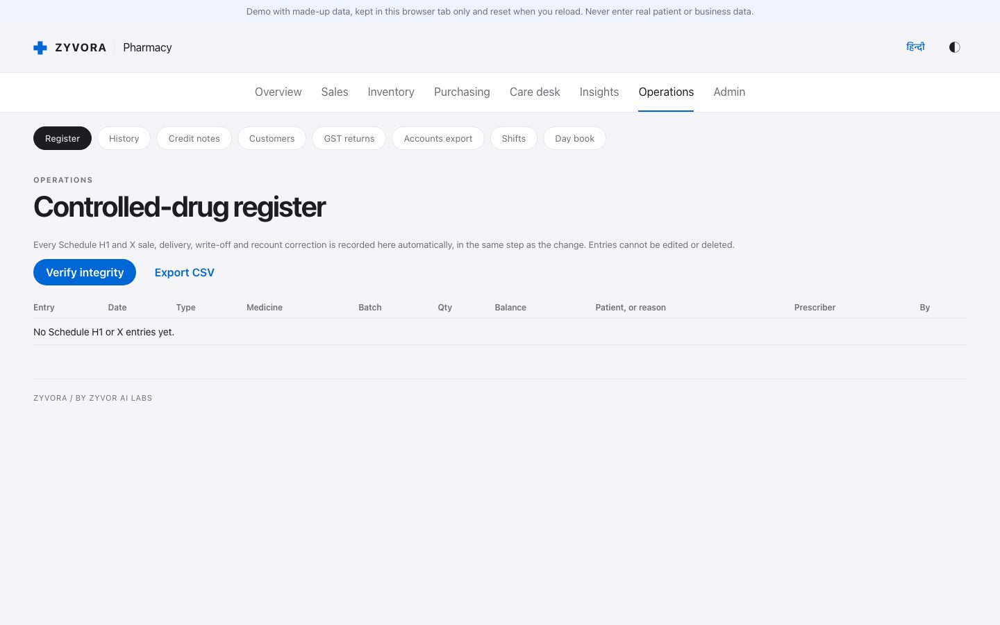
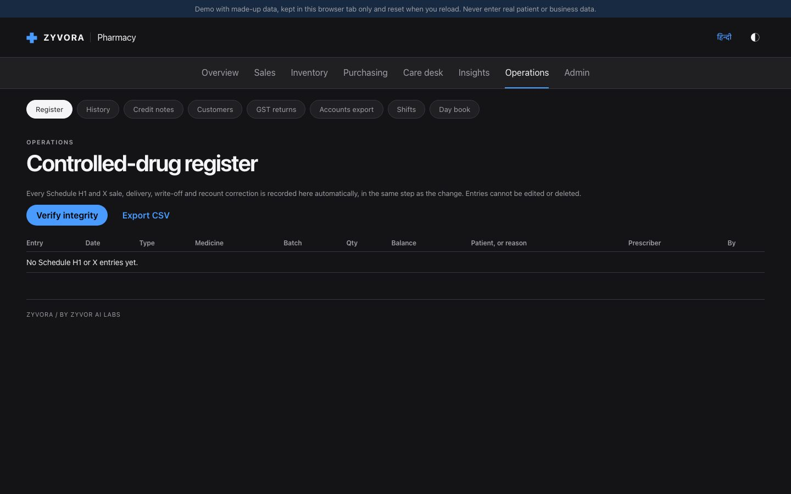
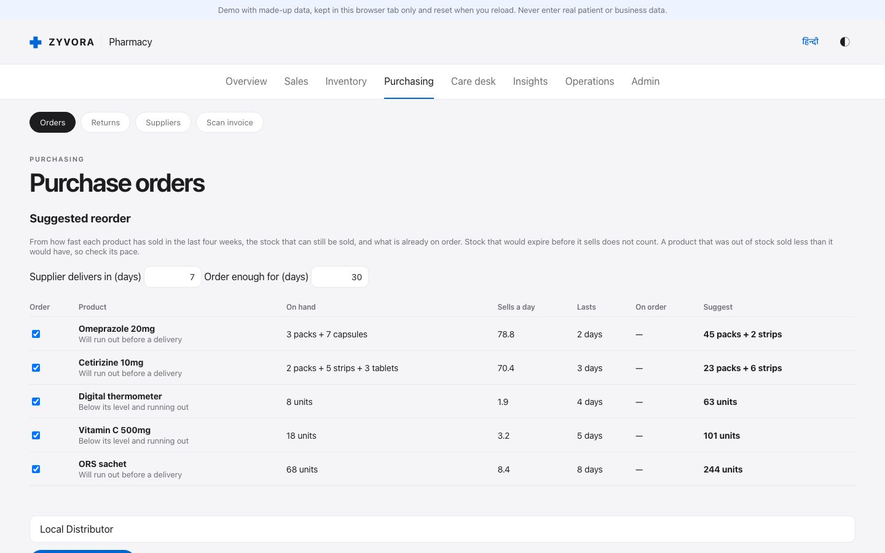
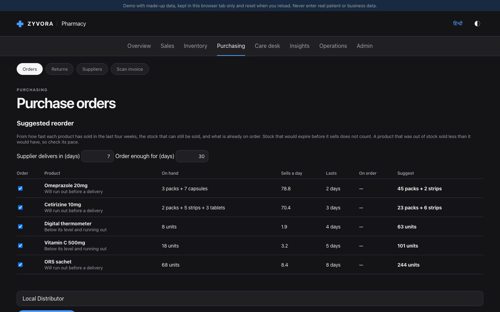
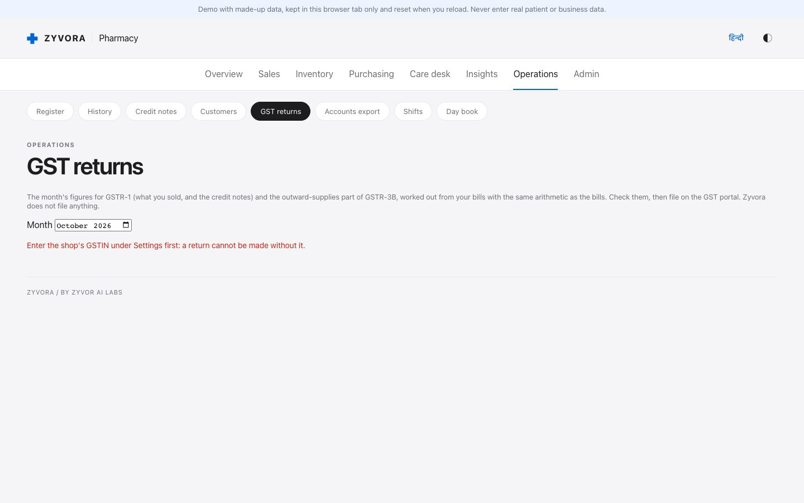
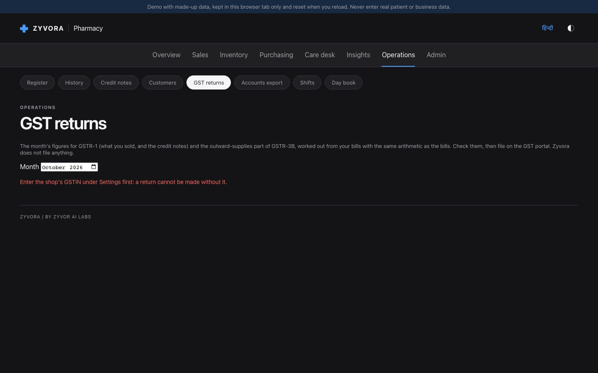

Try it
Try Zyvora Pharmacy on your own computer.
One command, about five minutes, and a pharmacy full of invented products to look around. No sign-up, nothing to buy, and nothing leaves your machine.
- About 5 minutes
- Runs on your computer
- Remove in one command
- Fictional data only
- Not a certified tax system
The one-command install is not published yet. The commands below will work once the first release is out; until then, open the browser demo, which needs no install.
Step 1
Pick your computer.
We guessed from your browser; change it if we were wrong. You need Docker running first (help).
Mac
Start Docker Desktop, open Terminal (Spotlight, type Terminal), paste this, press Return.
curl -fsSL https://github.com/zyvorai/zyvor-pharma-site/releases/latest/download/get.sh | sh -s -- up --demoApple Silicon and Intel both work. It writes only under ~/.zyvor-pharma.
Windows
Not yet verified on a Windows PC. If you try it, please tell us what you see (feedback link at the bottom).
Open PowerShell, paste this, press Enter. It runs Zyvora Pharmacy inside WSL 2 (Windows 10 version 2004 or later, or Windows 11) with Docker installed there.
irm https://github.com/zyvorai/zyvor-pharma-site/releases/latest/download/get.ps1 | iexLinux
Docker (or Podman with compose) must be installed and running. Open a terminal, paste this, press Enter.
curl -fsSL https://github.com/zyvorai/zyvor-pharma-site/releases/latest/download/get.sh | sh -s -- up --demoSteps 2 to 4
What you will see.
2 The installer runs
It downloads two small images (checked against a checksum), starts Zyvora Pharmacy with a fictional pharmacy, and prints a one-time password. Open http://127.0.0.1:8080.


3 Sign in with the printed password
Use the user name admin and the password the installer printed (also saved in ~/.zyvor-pharma/.env). There is no default password. Keep that file private.


4 Look around the pharmacy
Ring up a sale, receive a delivery, check expiry, and open GST returns. Everything here is invented.


Step 5
A pharmacist’s test drive.
Eight things to try, about fifteen minutes. Tick them off as you go; your ticks stay in this browser only.
0 of 8 tried
Use
adminand the printed password.You should see The overview with what needs attention.
Sales: search a product (try “para”), add it, take cash.
You should see A bill number, GST split, and stock going down. The earliest-expiring batch is used first.
Add Alprazolam: the app asks for the prescriber and records it in the register.
You should see The Register screen shows a stock-out with the balance left.


Purchasing → Orders: receive stock with “10 + 1”.
You should see Paid and free units in stock; the cost per strip is spread over all of them.


Inventory shows near-expiry batches; Orders shows what to reorder and why.
You should see Arithmetic on every line. Nothing is ordered until you submit.
Operations → GST returns: pick the month.
You should see Tax collected, input credit from supplier bills, tax to pay, and the JSON downloads.


Purchasing → Returns: send expired stock back, then record the credit note with its GST.
You should see The credit note takes the tax back from the month’s input credit.
Admin → Backups: make an encrypted backup with a passphrase of your own.
You should see A file you can restore on another computer.
GST figures and files are worked out for you to check; Zyvora files nothing and is not certified GST software. Fictional data only.
Afterwards
Check it, or take it away.
Did everything install correctly?
Run ~/.zyvor-pharma/app/install.sh test. It checks that the page is up, that the printed password signs in, and that stock, sales, orders, bills, customers and the register can be read. All checks passed means everything works.
Remove it
Run ~/.zyvor-pharma/app/install.sh uninstall. The containers, their data, the images and the ~/.zyvor-pharma folder are deleted.
If something goes wrong
Common questions.
Nothing opened, or the page cannot be reached
Give it a minute after the command finishes, then run ~/.zyvor-pharma/app/install.sh status and open the address the installer printed (usually http://127.0.0.1:8080). It listens on this computer only.
It says Docker is needed
The trial runs in containers. Install Docker Desktop (Mac, Windows) or Docker/Podman (Linux), start it, and run the command again.
I forgot the password
It is in ~/.zyvor-pharma/.env as ZY_ADMIN_PASSWORD. Or uninstall and install again (that creates a new empty pharmacy).
Port 8080 is already in use
Add a different port at the end of the command, for example --port 8081.
Windows: what happens the first time
If WSL 2 is missing the script tells you to run wsl --install; restart, open Ubuntu once to create a Linux user, install Docker there, and run the same command again.
I am behind a company proxy or firewall
The installer downloads from github.com (the release files). Ask IT to allow it, or try from a home connection.
Can I see the source instead?
The application source is private. Ask sales what can be shared with evaluators. The trial uses published container images.
Start over, or remove everything
~/.zyvor-pharma/app/install.sh uninstall deletes the containers, their data and ~/.zyvor-pharma. Then run the install command again.
Tell us how it went.
What worked, what confused you, what you wanted to see. If something failed, include the output of the test command and your computer type.